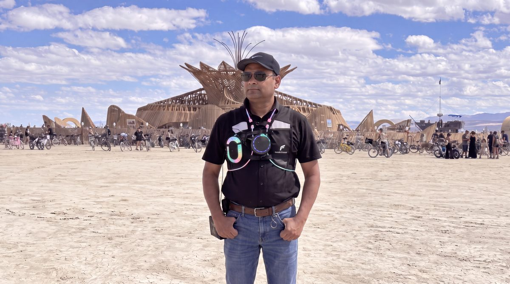

आत्मानं रथिनं विद्धि शरीरं रथमेव तु। बुद्धिं तु सारथिं विद्धि मनः प्रग्रहमेव च॥
Know the self as the one who rides, and the body as the chariot. Know the discerning intellect as the charioteer, sārathi, and the mind as the reins held in its hands.
Katha Upanishad 1.3.3
A wearable voice companion that rode through Black Rock City on its builder's chest, and comes to Oakland with a second voice.

The first SARATHI was a journey. It rode to Burning Man 2026 on its builder's chest: a small computer, a ring of microphones on a steel plate, a speaker, and a game controller for push-to-talk. It ran completely offline for the week. It knew the Katha Upanishad and the Gita, it knew where the camps and art stood, and it worked out the walk from wherever you were standing.
It is slow on purpose. It thinks for a few seconds before it speaks, the way you would want a charioteer to.
It is also, plainly, a joke at the expense of the smart glasses that record you. This one has no camera, keeps no transcript, and forgets you the moment you walk away.
Nachiketa was offered horses, gold, and music to stop asking. SARATHI was offered Wi-Fi.
Decompression falls during Durga Puja, October 16 to 21, the biggest festival in eastern India, where I am from. Every year, Bengal builds temporary temples called pandals and invites the goddess home. On the last day, her image is carried to the river and given back to the water.
A demon named Mahishasura could not be killed by any god, so the gods pooled their power into one figure, Durga. Each gave her a weapon. Shiva a trident, Vishnu a discus, the Himalaya a lion to ride, and Varuna, lord of the waters, a conch. The battle lasted nine nights. Mahishasura kept changing shape, buffalo to lion to man to elephant and back, until she caught him halfway through a change and finished it there.
Everyone at Decompression knows a demon like that. It is whatever takes back the kingdom when you come home from the desert, and it never holds one shape long enough to catch.
This time the chariot stands still, and the goddess comes to it.
It answers first, on its own, from the small computer on my chest.
When a question is bigger than the chariot, lift the conch from its cradle. The conch sounds, the ring spins while the question crosses the river, and a second voice answers. Hers.
Each question lights one of 108 lamps in a tray of rice, like the 108 lamps of Sandhi Puja. The goal is 108 questions by midnight.
Pluck the bow to hear a warrior's bowstring. Ring the bell. Kids can play Catch Mahishasura.
In the myth, every god gave Durga a gift. An offering board asks what you would give her, and the cards become an artwork by midnight.
You leave with a printed slip showing the verse your question landed on, and a way back to this page.
By itself, SARATHI collects nothing. There are no accounts, no logging, and no analytics. Audio is transcribed in memory and discarded. The 108 lamps count questions, not people.
When you lift the conch, one thing changes. The text of your question, and only that, is sent over the venue's network to a hosted language model, and her answer comes back. Your voice never leaves the chest. SARATHI keeps no copy of what it sent. What the provider does with that text is governed by the provider's own terms, which is exactly why SARATHI asks first and announces it out loud. Put the conch down and nothing else is sent all night.
When the battery dies, the day is gone.
Tap the tray to light one. The page does not remember how many you lit. Neither does SARATHI.
Six objects, each doing one thing. Tap them.
The demon runs the ring and keeps changing shape. Stop him in the gold gap, halfway through a change, and you have him. Tap the ring or press space.
He is a buffalo now. Watch the red light.
Caught: 0
Everything the wearer needs runs on the body. Everything the conch reaches for opens only while the conch is lifted, and closes again the moment it is put down.
The philosophical corpus is the Katha Upanishad, the Bhagavad Gita, and a set of notes on the classical schools of Indian thought.
The navigational corpus is built from Burning Man Project's published open data: the 2026 city plan and street grid, surveyed plaza and portal coordinates, public toilet locations, and the public theme camp placements. Directions are computed geometrically from the polar street grid rather than guessed at by the language model, so a walking instruction is arithmetic, not invention.
Placement data is a snapshot and camps move. SARATHI says so when it answers, and points people to Placement HQ for ground truth.
Nothing, to anyone, ever. SARATHI is a gift. It is not a product, it is not for sale, it carries no advertising, and it is not a demonstration of anything anybody sells. Decompression is a ticketed Burning Man Project event. The ticket is theirs. SARATHI takes nothing.
If your slip led you here, this is the whole of what it printed.
The same hymn praises her as memory and as consciousness. Recall and awareness are two of the words in SARATHI's name.
At the end of the night the conch sounds one last time. Her voice goes quiet. The charioteer is self-contained again, alone on the chest, the way it was in the desert.
The Burn ends in fire. The Puja ends in water. Both make something beautiful and then let it go.
আসছে বছর আবার হবে
Asche bochor abar hobe. It will happen again next year.